Definition Model
Overview
This section describes the formal model of Work Plan and Task Plan, which is presented in UML form, as well as in TP-VML definition instance form. The following figure shows the main classes in the proc.task_planning.definition package.
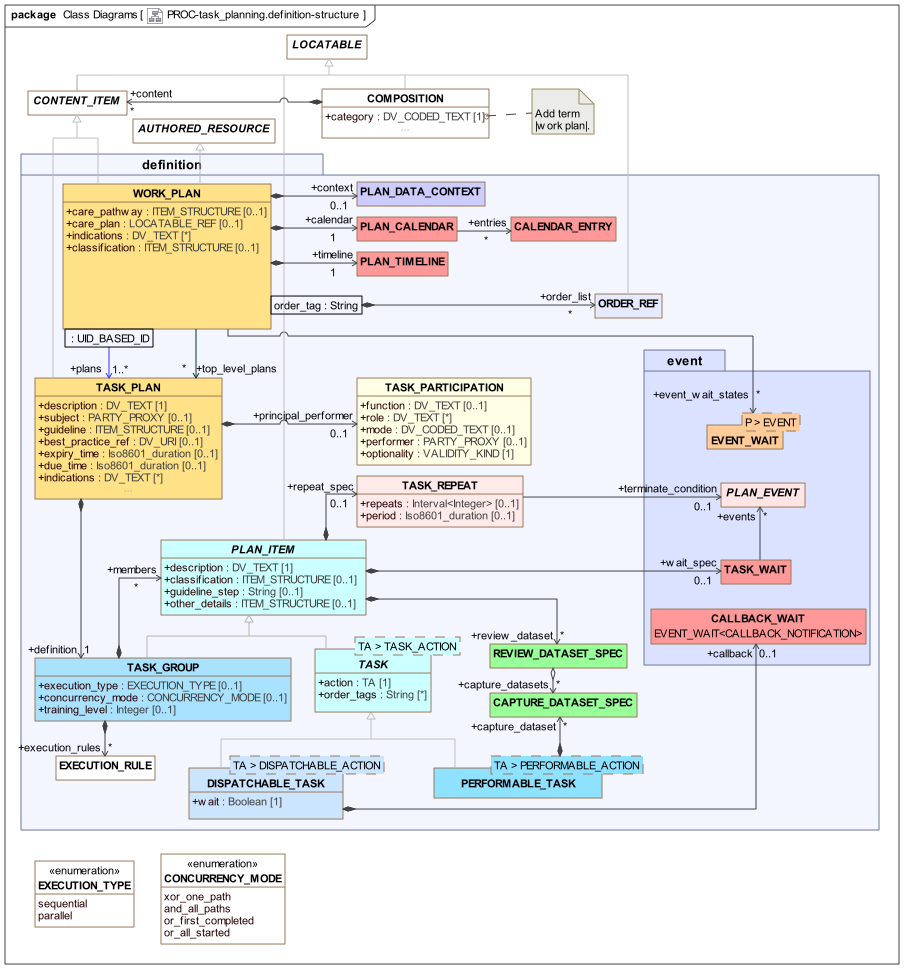
proc.task_planning.definition model overviewThe remaining classes are shown in various specialised views below.
Plan Structure
The top-level structure for defining plans is a WORK_PLAN, which includes one or more related TASK_PLANs making up a logical goal-oriented plan. Within a Work Plan, two distinct lists of Task Plans are maintained:
-
plans: references all Task Plans; -
top_level_plans: 'entry point' Task Plans that will be unconditionally active at Work Plan activation (often limited to only one).
Non-top-level plans are those used as sub-plans within the hierarchy of a top-level Plan. A typical Work Plan / Task Plan structure is shown below in TP-VML form.
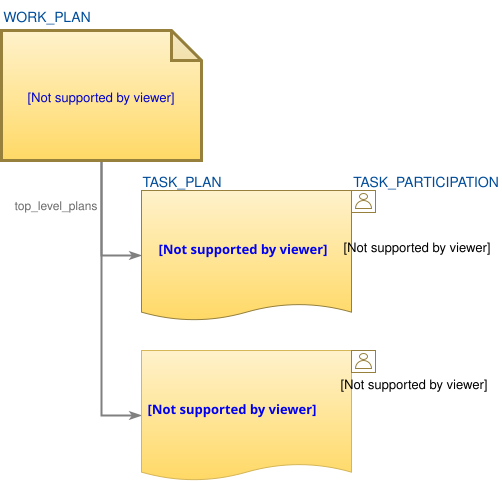
WORK_PLAN has a number of attributes relating to formal Plan representation, as follows:
-
context: a data context for the Plan as a whole, which enables external variables (such as patient data items) to be tracked and updated; -
calendar: a global calendar containing entries that relate to this Work Plan, e.g. appointments, holidays etc; -
timeline: the global timeline for the Plan (and hence the subject) into which planned Tasks are fixed, with times specified as offsets from the zero point; -
event_wait_states: a reference list of all Event wait instances defined in the Plan; -
order_list: a table of references to orders being tracked in the Plan (described in Order Tracking below).
Additionally, there are the following meta-data attributes:
-
indications: record clinical indications (including codes for diagnoses) for which the Work Plan can be / should be used; -
classification: record one or more classifications of the Work Plan as a whole, e.g. business category, administrative category etc. The most common structure is likely to be a logical list (i.e.ITEM_TREEinstance of linear list form), such that thearchetype_node_idattribute (inherited fromLOCATABLE) acts as the name of the category (e.g. 'org unit'), and anELEMENTcontaining aDV_TEXTproviding the actual category value (e.g. 'inventory management').
Both WORK_PLAN and TASK_PLAN are descendants of CONTENT_ITEM, which makes them a type of content that may occur in an openEHR COMPOSITION. Compositions used for this purpose have their category attribute set to the openEHR coded term |Work Plan|. This enables Work Plans to be committed to the openEHR EHR.
Plan internal structure is specified by the definition attribute of a TASK_PLAN is a TASK_GROUP, which has as its members any number of PLAN_ITEMs, which resolve either to more TASK_GROUPs (and some specialisations described below), or TASK entities.
The Plan Calendar
The Work Plan calendar consists of Plan-related entries fixed in time, as per the usual notion of a person’s or organisational calendar. These will normally be a small subset of entries from a/the work management calendar of the organisation in whose IT system the Work Plans are used. A Plan calendar event can be used as the basis for a wait state (TASK_WAIT.events) for Tasks in the Plan, either to indicate that something should be done on the date/time of the calendar event, or with a certain delay. Calendar events may include organisational events, national holidays and patient appointments. Wait states of the form '2 weeks after Easter Sunday' and '24 week ante-natal review (10 Feb 2019)' can therefore be defined in a Plan.
Plan Items
The PLAN_ITEM class is the parent of all fine-grained elements of a Task Plan, which are either TASKs or TASK_GROUPs. It has a mandatory description attribute, which represents a natural language specification of the work of the Task.
Wait States
PLAN_ITEM also has two optional attributes that control the timing behaviour of Task Plan elements: wait_spec and repeat_spec. The first enables a wait state (described above under [_time_and_wait_states]) to be applied to a Task or Group, which is triggered by time-related Events (clock time, reaching a point in a calendar) or other kinds of Events (external notifications etc). This allows the timing of a Task to be specified.
Repetition
The second attribute, repeat_spec of type TASK_REPEAT enables a Task or Group to be marked as repeating. This is not intended to replace the use of individual Task instances over time, such as repeated medication administrations, but rather to be used to indicate if larger sections (i.e. Task Groups) of planned Tasks are repeatable. Where repeats are specified, they will be unrolled into literal copies in the materialised expression of the Plan.
Repeat behaviour is specified in terms of the attributes repeats, terminate_condition and period. The first indicates the minimum and maximum number of repeats that may occur. Repetition occurs until the minimum number of repeats (i.e. repeats.lower) is reached. Following that, if terminate_condition is set, it is evaluated prior to each further potential iteration. Repetition will cease when terminate_condition becomes True or else when repeats.upper is reached (assuming no plan abandonment or other exceptions).
The optional period attribute defines the period of repetition. If the latter is not defined, each repetition commences according to the application of Task availability rules already defined on the individual Tasks and/or Groups; this will typically lead to each repeat executing as soon as the preceding one has completed. If set, the period will have the effect of spacing iterations out over time. Its value should be greater than the duration of a single iteration, since at execution time, a new iteration can only begin after completion of the previous one.
Other Attributes
Two archetypable structure attributes are defined on PLAN_ITEM. The first, classification, is designed to allow any Task Group or Task to be tagged with one or more classifications, and has the same structural definition at WORK_PLAN.classification.
The second, other_details is provided to support extensions, in the same manner as elsewhere in openEHR information models.
Lifecycle State
At execution time, every Plan Item (i.e. Task and Group) notionally has a lifecycle state, represented by a state machine, containing states and transitions reflecting possible actions by the performer. The lifecycle state of a Task is set by the TP engine and affected directly by performer actions and other logic, while the lifecycle state of a Group is aggregated from the state values of its member Tasks and Groups.
The lifecycle state does not appear directly as a data attribute on the PLAN_ITEM or TASK classes since it is a runtime variable for a Task. Accordingly, it appears in the materialised model, described below. It is however useful to decribe the lifecycle state here, since it represents a key part of Task Plan semantics, and influences whether Tasks (and thus Groups) fail or complete, and potentially whether the Plan continues in execution.
The state machine is shown below.
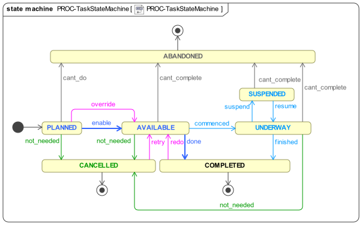
The state machine is designed to represent both stateless and stateful views of the actual execution state of a Task in the real world. The standard pathway is available ⇒ completed or abandoned or cancelled, which enables a user to indicate the outcome of executing a Task, without having to report interim states during execution in the real world. The pathway through the state underway allows longer-running Tasks to be represented as being worked on. The suspended state is used to represent long-running Tasks that have been put on hold, i.e. are not currently being actively worked on, but are still considered to be underway.
Task lifecycle only accounts for the states of a Task itself; states of an order (e.g. prescription, lab request) with which the Task may be associated will be visible in the documentation for those objects, e.g. openEHR ACTION or other Entry objects.
|
The lifecycle states are described by the TASK_LIFECYCLE enumeration below.
Unresolved include directive in modules/task_planning/partials/2-definition_plan.adoc - include::ROOT:partial$classes/task_lifecycle.adoc[]
Task Availability
Each Task in a new Plan execution starts in the initial state. Following the design principle described earlier, the execution engine executing a Task Plan can determine the availability i.e., when the transition planned ⇒ available may occur for any Task as follows:
-
control-flow: preceding Tasks / Groups within the owning Task Group are in the
completedorcancelledstate; -
wait state: any Task or Group wait state has been exited due to the arrival of the relevant events (including time-related);
-
subject preconditions: subject preconditions attached to the current Task Action are satisfied.
A Task is considered available according to this logic even if performer and/or resources have not been allocated. Availability in this sense is the equivalent of the 'enabled' state of a task within a Workflow Net, described in [1], section 2.3.2.
The workflow application may provide an override capability so that a Task can be performed before it is determined to be available. This would enable a user to perform the Task anyway, forcing the lifecycle transition override from planned to available. A corresponding TASK_EVENT_RECORD is created recording the use of the override.
Aggregate Process State
The effective state of a Task Group, Task Plan and Work Plan can be inferred from the lifecycle states of the Tasks, according to logic described in [Aggregate Lifecycle State]. This includes availability of Task Groups containing parallel paths with associated OR logic, i.e. the equivalent of the OR-join in YAWL ([1], section 3.2).
References to Clinical Quality Artefacts
The classes WORK_PLAN and TASK_PLAN may contain various references to externally defined clinical quality artefacts that they are based on or relate to, as follows:
-
In
WORK_PLAN:-
care_pathway: a reference to a published care pathway from which this Work Plan was derived, if any; -
care_plan: a machine reference to an underpinning Care Plan from elsewhere in the EHR, if any exists;
-
-
In
TASK_PLAN:-
guideline: reference to a published guideline (used byWORK_PLAN.care_pathway, if set) from which this particular Task Plan was derived, if any; -
best_practice_ref: reference to an institutional document that defines the best practice on which this Task Plan is based, if any;
-
-
In
PLAN_ITEM:-
guideline_step: reference to a step within theguidelinereferenced by the current Task Plan or thecare_pathwayof the Work Plan, which is the basis of this Plan Item, i.e. single Task or Task Group.
-
In addition, where a Task Plan is driven by an order set, two attributes are provided to record the details:
-
In
TASK_PLAN:-
order_set_type: the identifier of a type of Order Set which this Task Plan uses, if any; -
order_set_id: the identifier of a specific Order Set which this Task Plan uses, if any.
-
Lastly, the workflow_id attribute defined in ENTRY may be set within INSTRUCTION and ACTION to refer to the Order Set instance used in this Task Plan, if set.
Class Definitions
Unresolved include directive in modules/task_planning/partials/2-definition_plan.adoc - include::ROOT:partial$classes/work_plan.adoc[]
Unresolved include directive in modules/task_planning/partials/2-definition_plan.adoc - include::ROOT:partial$classes/plan_calendar.adoc[]
Unresolved include directive in modules/task_planning/partials/2-definition_plan.adoc - include::ROOT:partial$classes/plan_timeline.adoc[]
Unresolved include directive in modules/task_planning/partials/2-definition_plan.adoc - include::ROOT:partial$classes/calendar_entry.adoc[]
Unresolved include directive in modules/task_planning/partials/2-definition_plan.adoc - include::ROOT:partial$classes/task_plan.adoc[]
Unresolved include directive in modules/task_planning/partials/2-definition_plan.adoc - include::ROOT:partial$classes/task_participation.adoc[]
Unresolved include directive in modules/task_planning/partials/2-definition_plan.adoc - include::ROOT:partial$classes/plan_item.adoc[]
Unresolved include directive in modules/task_planning/partials/2-definition_plan.adoc - include::ROOT:partial$classes/task_repeat.adoc[]
Task Group Structure
The set of Tasks in a Task Plan is represented within a containment structure created using instances of the TASK_GROUP class, which has three key attributes. Execution of a Group is primarily controlled by the execution_type and concurrency_mode attributes, which respectively indicate sequential or parallel processing, and for the latter case, various modes of and and or parallel processing logic (described in the next section), common to workflow formalisms. For more exotic situations, the execution_rules attribute can be used.
TASK_GROUP also has a training_level attribute which enables different visibility of Sub-Plans to users with different experience levels. This is described more fully below.
The Task Group construct enables two important ways to relate Tasks together:
-
as a module of work consisting of a series of Tasks, achieved by a Task Group with
execution_type = sequential; -
as a set of possible or mandatory concurrent threads of work, achieved by a Task Group with
execution_type = parallel.
Sequential Task Groups
A sequential Task Group corresponds to a single thread of processing at execution time, in which each of the Tasks becomes available to the worker (i.e. Task Plan’s principal_performer) in order, and according to the specific conditions associated with each Task. The following illustrates a sequential Task Group in TP-VML. Note that although there is visually an end-group icon (right hand end), there is no separate class or instance in the model - both the start-group and end-group icons visually represent the TASK_GROUP as a logical container.
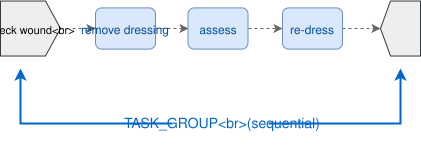
Parallel Task Groups and Concurrency
The parallel Task Group represents a different degree of complexity, since it enables concurrent threads of work at execution time. In terms of YAWL and Petri net workflow theory, a parallel Task Group corresponds to paired split and join points. The following illustrates a parallel Task Group in TP-VML. The multi-point shape of the exit and entry elements is intended to convey the idea of multiple possible branches (the limitation of 3 points is purely visual, semantically, any number of branches is supported).
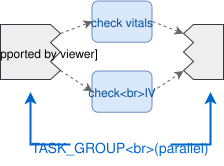
The first difference between a parallel Group and a sequential one is that when a parallel Group is arrived at in the control flow, once any wait state is satisfied, the first Task in all of the outgoing branches is made available. Subsequent execution behaviour depends on the type of split and join logic (i.e. AND, OR, XOR, or other) which is represented by the attribute TASK_GROUP.concurrency_mode, whose possible values indicate to the execution engine three things:
-
how many branches may be commenced;
-
how commencing a branches affects other branches;
-
under what conditions to consider the group has completed.
Here, the notion of 'completion' corresponds to the completed state in the Task lifecycle state machine described earlier, inferred from the completion states of the items in the branches. The detail of how Task Group lifecycle state is aggregated from contained items is described in detail in [Aggregate Lifecycle State]. Here we describe only the logic determining the completed state, for the sake of simplicity.
The AND case is the simplest, since there is no conditional processing - all paths must be followed. An AND Group essentially represents work that should be performed, but for which the ordering is more relaxed than for a strict sequential Group.
The XOR case represents a 1/N choice, and is understood in this specification as representing the intent that only one path can sensibly be followed, usually because the branches are mutually exclusive alternatives in reality. Consequently, in execution, an XOR Group is processed such that as soon as one branch is chosen by a performer transitioning a Task from the available state, the first Task in all remaining branches is transitioned to cancelled, effectively cancelling the non-chosen branches. In this case completion is also trivial to determine.
However the OR case is more complicated. A minimal interpretation of 'OR' logic is that as soon as one branch in the Group completes, the Group is considered completed, and no more Tasks from other branches are available to perform. A maximal interpretation is that Group completion is achieved only when every path commenced completes. The model represents these two cases explicitly, via the values or_first_completed and or_all_started respectively of TASK_GROUP.concurrency_mode.
The following table summarises the semantics of the four concurrency modes.
| Concurrency mode | TP-VML | Logic | Split behaviour |
Join behaviour |
|---|---|---|---|---|
|
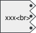 |
AND |
All branches are followed. |
Group completes when all branches complete. |
|
XOR |
Only one branch can be started; once a branch is commenced, the first Task in remaining branches is transitioned to |
Group completes when the started branch completes; equivalent to a sequential Group, once a branch is chosen. |
|
|
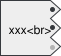 |
partial AND |
One or more branches may be commence. |
The Group is complete when all branches commenced have completed; equivalent to an AND consisting of all commenced branches. |
|
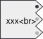 |
OR |
One or more branches may be commenced. |
The Group is complete when one branch completes. |
The parallel / concurrent semantics attached to the Task Group do not indicate anything about decisional processing, i.e. the conditions that might be used to choose outgoing paths from the split point represented by a Task Group in the XOR and OR logic cases. Consequently, the choice of path(s) to follow in the parallel case is determined by the performer, not the system. In order to specify conditions on paths, the conditional subtypes described below are used.
Hierarchical Nesting
Task Groups of sequential and parallel types may be mixed in a hierarchical fashion. One structure is such that the overall work of a Task Plan is defined as a sequential Group in which some members are a parallel Group, as shown below.
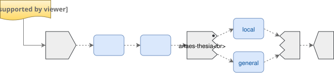
Similarly, the outermost Group may be parallel, with the work being defined as sections of sequential work situated within a parallel Task Group, as shown below.
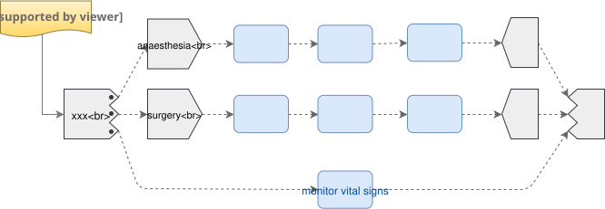
Generic Execution-time Semantics
The combination of the Task Group / Task hierachical pattern, which implicitly defines the graph structure of the 'normal flow' of a Task Plan, and the generic control attributes defined on TASK and its descendant types enable a significant amount of execution-time Plan processing to be implemented independently of any specific Task semantics.
Well-formedness
A significant consequence of the Task Group construct in the TP model is that each Task Group forms a sub-network within its container, where a network is understood in the graph theory sense of a directed graph with a start s and terminal node t, containing paths from s to t n which all member elements are found. This holds for descendant types of TASK_GROUP, including the Decision Structures described below. This is a more limited form of connectivity than allowed in YAWL or BPMN, which do not require matched split and join points.
Training Level
One challenge with creating Task Plan definitions is the level of detail to use, with respect to the variable level of skill of different performers. For a senior nurse, a briefer version of the Plan would be preferable with actions such as 'set up IV with catheter' being a single atom, whereas a trainee may need to see a more detailed set of sub-tasks.
To enable a single Plan to be used in both ways, the concept of 'training level' is included in the model, on the TASK_GROUP class. This enables any Group of Tasks to be marked as having a specific training level, where a higher number corresponds to less experience. At execution time, the training level of the allocated performer can be obtained, and then used in comparison to the training level indicated on each Group (including the top-level Group of the whole Plan). If the user training level is higher, then the Group may be shown only as a single step (using its description, inherited from PLAN_ITEM); otherwise it may be shown as the set of sub-steps. This provides a simple way for the same Plan to be presented in different forms matching different performer experience levels.
The default value of training_level is 0.
Class Definitions
Unresolved include directive in modules/task_planning/partials/3-definition_task_plan.adoc - include::ROOT:partial$classes/task_group.adoc[]
Unresolved include directive in modules/task_planning/partials/3-definition_task_plan.adoc - include::ROOT:partial$classes/execution_type.adoc[]
Unresolved include directive in modules/task_planning/partials/3-definition_task_plan.adoc - include::ROOT:partial$classes/concurrency_mode.adoc[]
Unresolved include directive in modules/task_planning/partials/3-definition_task_plan.adoc - include::ROOT:partial$classes/execution_rule.adoc[]
General Task Semantics
Dispatchable and Performable Tasks
Tasks are represented by the TASK class whose two concrete sub-types distinguish the two basic flavours of Task, namely dispatchable and performable. TASK is a generic (i.e. templated) class, whose generic parameter is constrained to the type TASK_ACTION, the latter of whose subtypes defined the particular kinds of Tasks available.
The DISPATCHABLE_TASK<T> class has two attributes to do with managing context change and callback. The wait flag indicates whether the current Task waits (i.e. blocks) while the dispatched work is performed, or whether it continues on asynchronously. The first constitutes a context switch, the second a context fork. The callback attribute attaches a special kind of Event wait state that is triggered on receipt of a callback. How callbacks function in detail is described below.
There are some key differences between the two kinds of Task as shown in the following table.
| Task Type | Description | Lifecycle state |
|---|---|---|
Performable |
Task performed by the current performer. |
Advanced by actions of performer (real world actor) |
Dispatchable |
A Task whose work is dispatched for execution to another performer or system. |
wait = |
Class Definitions
Unresolved include directive in modules/task_planning/partials/4-definition_task_semantics.adoc - include::ROOT:partial$classes/task.adoc[]
Unresolved include directive in modules/task_planning/partials/4-definition_task_semantics.adoc - include::ROOT:partial$classes/dispatchable_task.adoc[]
Unresolved include directive in modules/task_planning/partials/4-definition_task_semantics.adoc - include::ROOT:partial$classes/performable_task.adoc[]
Task Actions
The specific definition of the work of Tasks is provided by TASK.action, of type TASK_ACTION and its subtypes. Two abstract sub-types DISPATCHABLE_ACTION and PERFORMABLE_ACTION distinguish the dispatchable and performable flavours of Task Action, corresponding to the two TASK subtypes. The following UML diagram shows TASK_ACTION and its subtypes in detail.
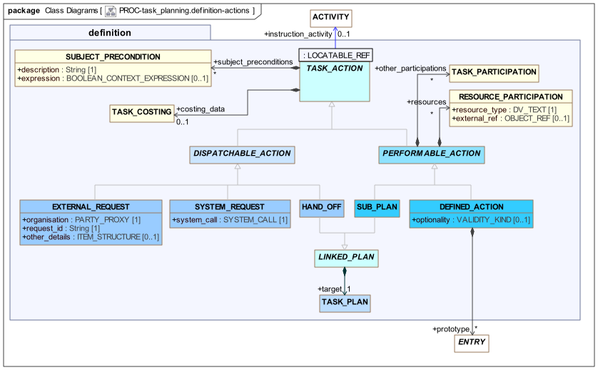
proc.task_planning.definition model - Task ActionsTASK_ACTION includes two attributes that apply to all subtypes. The first is subject_preconditions, which enables subject-related preconditions to be expressed, i.e. conditions referencing variables relating to the subject such as vital signs. These preconditions can be understood as conditions for safe processing, and should either be satisfied before proceeding, or else overridden by a competent performer who understands the implications.
A subject precondition is formally represented as a BOOLEAN_CONTEXT_EXPRESSION, whose expression value is a string in openEHR Expression Language syntax.
Pre-conditions are evaluated at the point at which the Task to which they are attached becomes available during execution. If any pre-condition evaluates to False, the Task is in theory unable to be performed. A clinical professional may override at execution time, since it may always be the case that particular circumstances obviate the need for a particular pre-condition that normally applies.
The second generally applicable attribute is costing_data, since cost information may clearly be relevant to any Plan item. Costing is dealt with in detail below.
Performable Actions have two attributes. The other_participations and resources attributes allow other performers and passive resources to be defined for an Action. Both are subject to an allocation process at execution time, similar to that of the principal_performer.
The subtypes of TASK_ACTION consist of the following:
| Type | TP-VML | Description |
|---|---|---|
|
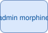 |
An inline-defined Task to be performed by the principal performer of the Group (see below for details); |
|
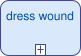 |
A kind of Task that stands for another Task Plan (identified by the inherited |
|
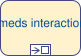 |
A kind of Task that consists of a request to a computational system, such as a data retrieval or procedure call, on behalf of the current performer; |
|
A kind of Task that hands off to another Task Plan in the same Work Plan, having a different performer (identified via the |
|
|
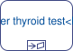 |
A Task type that consists of a request to an external organisational entity that is outside the current Work Plan and its execution environment, on behalf of the current performer; |
The following sections provide more detail on some of these model features.
Performable Actions
Sub-plans and Re-use
As described above, multiple Task Plans may be used to define a single logical plan of work. This occurs for two main reasons:
-
re-use: Task Plans that can be used on their own, e.g. 'set up IV drip', are combined within a larger plan;
-
level of granularity: a Task Plan can contain Tasks that can be represented as finer-grained Task Plans, which may potentially be used or passed over depending on the level of experience, known here as training level of the performer.
The following instance diagram illustrates.
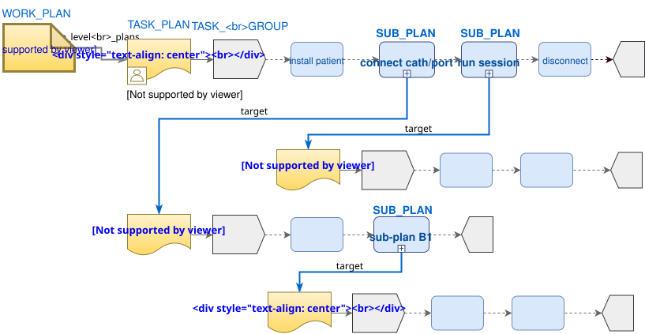
This shows a Plan for dialysis with a single performer, 'dialysis nurse', and several sub-plans, each referred to by an instance of the SUB_PLAN class. Since a Sub-plan is a kind of Task, it has a description and could be performed and signed off as if it were a normal inline DEFINED_ACTION by an experienced performer (training level high), or it might be entered into by a performer such as a trainee nurse. The TASK_GROUP.training_level attribute can be used to set the experience level of sub-plans if required; implementing this behaviour at execution time would rely in the Plan execution engine using this setting.
Inline Defined Actions
Tasks whose definitions are stated within a Task Plan are modelled using the DEFINED_ACTION type. A detailed specification of the work to be done in a Defined Action may be stated via optional atttribute prototype of type ENTRY, which enables the details of a Task to be specified in terms of a descendant of the ENTRY class. This is typically an ACTION instance but could be an OBSERVATION, ADMIN_ENTRY or other descendant. The following view of the UML illustrates.
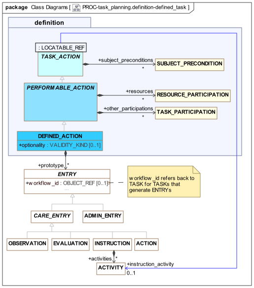
The attribute is called 'prototype' because the target Entry instance is understood as a partially populated, prototype 'planning time' partial copy of an Entry that will be created when the Task is actually performed. For example, a Task Plan for administering medication at 8 hourly intervals over a number of days could consist of a number of DEFINED_ACTIONs, each having a protoype of an ACTION instance based on the openEHR-EHR-ACTION.medication.v1 archetype or a templated version thereof. Each such instance would contain the structured description of the medication administration and time, and when the administration was actually performed, an ACTION instance would be created from the prototype, modified to reflect any divergence from the planned form of the Task, and committed to the EHR in the normal way.
The following illustrates Task definitions using prototypes.
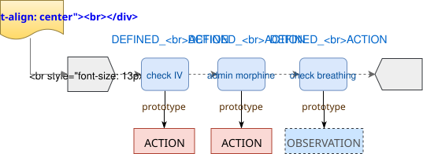
Assuming that the Task Plan is archetyped in the same way as Entries and other elements of the EHR, this scheme supports various modes of design-time specification. The prototype attribute in a TASK_PLAN archetype will usually be represented by an archetype slot or external reference, which specifies identifiers of permitted archetypes (or templates) of the target type, i.e. ACTION or other Entry. This can be used in various ways, as follows:
-
external reference: specifies a fixed archetype identifier which will be substituted in the templated form of the Task Plan. This has the effect of creating
ACTIONor other prototype instances in theTASK_PLANstructure; -
archetype slot: specified using a slot constraint that is satisfied by one or more archetypes that may be specified by a template, or left open until runtime.
In the latter case, the slot may be filled in the Task Plan template with an ACTION or other Entry archetype, allowing the Tasks to be fully specified inline as in the external reference case. Alternatively, it may be left unresolved, which would allow the workflow application to choose the exact Task definition archetype at runtime.
One reason to allow a Task to contain a prototype reference that remains unresolved until runtime is if the Task represents the act of making an observation, for example, taking a blood pressure. In such cases, no prototype at all may be needed, and the Task description attribute (inherited from PLAN_ITEM) may be sufficient information for the performer. On the other hand, a prototype OBSERVATION could be specified in the TASK_PLAN template, which defines a particular form of the observation, e.g. a blood pressure which only records mean arterial pressure and cuff size.
To allow further flexibility, The multiplicity of the prototype attribute is unlimited, to allow for the possibility of one Task being prototyped by more than one Entry instance, e.g. an ACTION and an OBSERVATION, two ADMIN_ENTRY instances and so on.
Dispatchable Actions
The type DISPATCHABLE_ACTION is the abstract parent of various Action subtypes that represent work requested to be done by some other agent, i.e. external to the current Task Plan. The three sub-types correspond to 3 different types of other performer, i.e.:
-
HAND_OFF: another principle performer in the same Work Plan; -
EXTERNAL_REQUEST: a performer outside the current Work Plan computational environment. -
SYSTEM_REQUEST: a computation to be performed by a system call;
The general execution scheme for such Actions is as follows:
-
dispatch the work request to a target actor or service;
-
block or continue, according to the
waitflag, which determines switch or fork behaviour; and -
process any callback notification, specified via the
callbackattribute.
The following sub-sections described the various subtypes of DISPATCHABLE_ACTION, while callbacks are described in detail further down.
Hand-offs and Coordinated Teamwork
Work Plans may be designed to contain multiple Task Plans, each corresponding to a team worker. In the execution of such a Work Plan, the performer of any Task Plan may at some point need to hand off to another performer, i.e. one of the other Task Plans in the same Work Plan. As described above, the original worker may wait or continue, and in both cases, receipt of a callback notification from the other Task Plan may cause a change in the execution path of the first Plan.
The following illustrates, using the example of an acute stroke management care process.
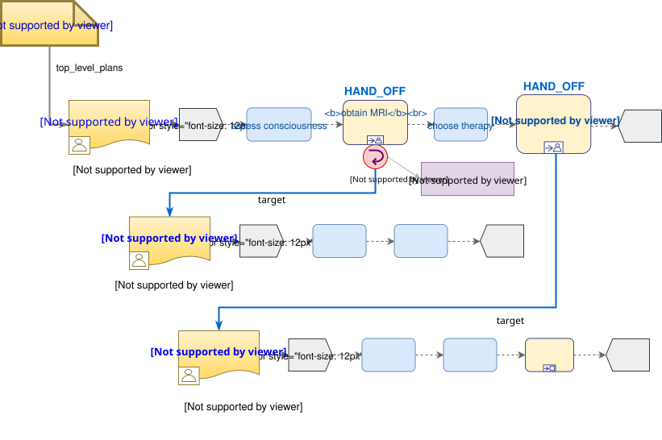
In this Work Plan, three Task Plans are used to perform (parts of) the clinical work coordinated for managing an acute stroke, as per a Care Pathway. There are two Hand-offs, the first synchronous (wait = True; callback wait resumes at the next Task) and the second an asynchronous fork (wait = False).
External Request
The Task sub-type EXTERNAL_REQUEST represents a request by the current performer to an external entity completely outside of the current Work Plan computational context, to request some work on behalf of the performer. This is typically an organisation of which routine requests can be made (e.g. pathology laboratory). The request has to be defined generically, in terms of an organisation identifier, a request identifier (i.e. a name or type of job) and a list of other details, represented by the standard archetypable ITEM_STRUCTURE.
System Request
The Task sub-type SYSTEM_REQUEST represents a request to a system with a computational interface on behalf of the performer, such as a logging facility or a decision support system. The request is defined in terms of a SYSTEM_CALL instance.
Class Definitions
Unresolved include directive in modules/task_planning/partials/5-definition_task_actions.adoc - include::ROOT:partial$classes/task_action.adoc[]
Unresolved include directive in modules/task_planning/partials/5-definition_task_actions.adoc - include::ROOT:partial$classes/subject_precondition.adoc[]
Unresolved include directive in modules/task_planning/partials/5-definition_task_actions.adoc - include::ROOT:partial$classes/performable_action.adoc[]
Unresolved include directive in modules/task_planning/partials/5-definition_task_actions.adoc - include::ROOT:partial$classes/resource_participation.adoc[]
Unresolved include directive in modules/task_planning/partials/5-definition_task_actions.adoc - include::ROOT:partial$classes/defined_action.adoc[]
Unresolved include directive in modules/task_planning/partials/5-definition_task_actions.adoc - include::ROOT:partial$classes/sub_plan.adoc[]
Unresolved include directive in modules/task_planning/partials/5-definition_task_actions.adoc - include::ROOT:partial$classes/dispatchable_action.adoc[]
Unresolved include directive in modules/task_planning/partials/5-definition_task_actions.adoc - include::ROOT:partial$classes/hand_off.adoc[]
Unresolved include directive in modules/task_planning/partials/5-definition_task_actions.adoc - include::ROOT:partial$classes/external_request.adoc[]
Unresolved include directive in modules/task_planning/partials/5-definition_task_actions.adoc - include::ROOT:partial$classes/system_request.adoc[]
Unresolved include directive in modules/task_planning/partials/5-definition_task_actions.adoc - include::ROOT:partial$classes/linked_plan.adoc[]
Data-sets and Application Interaction
Overview
In order for performers to execute Task Groups and individual Tasks within a Plan, specific data must often be reviewed to enable the performer to proceed. This is generally the case for Tasks that involve administering drugs to a patient, where the dose depends on one or more variables relating to the patient state, such as ECG data, INR, heart rate etc.
To achieve this, the Task Planning model formalises the relationship between a 'data set' and a Task that may use it. A 'data-set' in openEHR is a template, normally displayed as a form within an application. In the Task Planning context, a data set may also be a sub-section of a template or form, specified by a path, to allow more than one Task to be used to construct each section of a form. The following UML diagram shows the data-set related classes in detail.
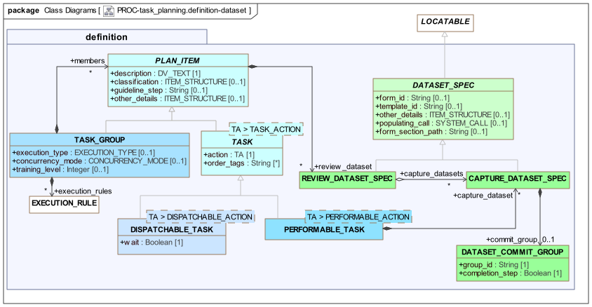
Display and Capture Data-sets
Two variants of data-set are defined, as follows:
-
data display: a
REVIEW_DATASET_SPECrepresents a template or part thereof that is to be displayed in order for the Task performer to do the work of the Task; -
data capture: a
CAPTURE_DATASET_SPECrepresents a template or part thereof that is to be populated by the work of the Task.
Either a template or form identifier (or both) maybe be used to specify a data-set. The populating_call attribute may be used to define a system call that will pre-populate either kind of data-set. The form_section_path attribute is populated if a data-set section (i.e. part of a form) needs to be specified.
A review data-set may be specified on any Plan Item (i.e. Task Group or Task, of any kind) via the attribute PLAN_ITEM.review_dataset, in order to signal to the runtime system to request the display of data at the start of that part of the Plan.
A capture data-set may be specified for a PERFORMABLE_TASK only (since the work of the Task in this case is what achieves the desired data capture), via the capture_dataset attribute.
For reference, any review data-set may have any number of capture data-sets used to capture the data associated with it, via the REVIEW_DATASET_SPEC.capture_datasets attribute. This enables the relationship between potentially numerous (typically small) forms/dialogs used to obtain data from users and the commonly larger forms used to display such data.
Both kinds of data sets described here may be the same as or related to templates and/or forms used in the generation of Task EHR data, mentioned in PERFORMABLE_ACTION.prototype.
Progressive Data Capture
Where Tasks involve data entry as part of the work, the data capture may occur over more than one Task, to be committed at some final Task when the data-set is deemed complete by the user. To support such progressive data capture, the notion of a commit group is used. This is an identifier for a logical data-set that might be entered in one or more forms over a number of Tasks. It is formally represented by the optional commit_group attribute in CAPTURE_DATASET_SPEC, of type DATASET_COMMIT_GROUP. To represent a progressively entered data-set, an instance of this type is used on each Task contributing to the data-set (need not be contiguous), with all but the final instance having the Boolean attribute completion_step set to False. The final Task in the series is marked by setting this flag True, at which point the execution engine may perform a standard commit action. The following diagram illustrates a typical instance of this structure.
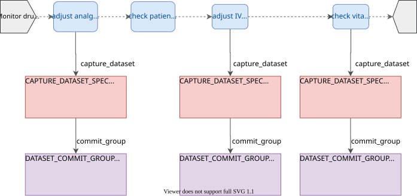
Class Definitions
Unresolved include directive in modules/task_planning/partials/6-definition_data_sets.adoc - include::ROOT:partial$classes/dataset_spec.adoc[]
Unresolved include directive in modules/task_planning/partials/6-definition_data_sets.adoc - include::ROOT:partial$classes/capture_dataset_spec.adoc[]
Unresolved include directive in modules/task_planning/partials/6-definition_data_sets.adoc - include::ROOT:partial$classes/review_dataset_spec.adoc[]
Unresolved include directive in modules/task_planning/partials/6-definition_data_sets.adoc - include::ROOT:partial$classes/dataset_commit_group.adoc[]
Decision Structures
Overview
Most Task Plans include decision structures, in which one of multiple branches may be taken depending on specific conditions. There are four varieties of such structure, which are defined as specific descendants of the TASK_GROUP class, as shown in the following UML model.
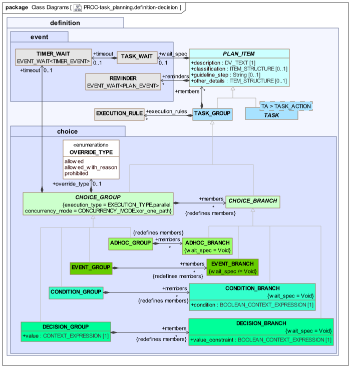
The CHOICE_GROUP class defines the essential semantics for all conditional structure types, which is that they conform to a parallel (execution_type is constrained to parallel), XOR-logic (i.e. single path) concurrency model, as indicated by the class invariants. In traditional workflow processing, any instance of a CHOICE_GROUP is thus logically an XOR gate.
The specific sub-types are based on the design principles described earlier, which distinguished both different conditional structural types, and three different levels of system support, i.e. 'automated', 'decision support' and 'ad hoc'. The combination of structural types and levels of system/user interaction levels is realised in terms of variations on the CHOICE_GROUP and CHOICE_BRANCH classes shown above, which define a generic notion of a decision point from which multiple branches emanate. The variations in system support manifest as follows.
-
fully automated: three kinds of fully defined decision structures, namely the
CONDITION_XX,DECISION_XXandEVENT_XXclasses shown in the UML diagram; -
decision support: where instances of the above structures should be considered recommendations only, the
override_typeattribute defined onCHOICE_GROUPmay be used on anyXX_GROUPto indicate that user override is allowed; -
ad hoc: a dedicated variation
ADHOC_GROUPandADHOC_BRANCHare used to represent multiple branches where no criteria are defined in the Plan definition, but are instead provided by an execution-time user.
In the override and adhoc cases, a justification may be provided at execution-time for having overridden or made a particular adhoc choice. This is represented in the materialised model, and therefore does not appear in the definition model.
The three fully defined decision patterns are described below.
Condition Group (if/elseif/else chain)
The first is a structure in which a set of Task Groups are treated as separate branches from a common point in the Plan. Each branch is entered conditionally according to the Boolean expression included on the branch. The classes CONDITION_GROUP and CONDITION_BRANCH provide this structure, which is equivalent to an if/then/else structure in a programming language. A final 'else' branch may be defined using a CONDITION_BRANCH with an expression representing the True value. At execution time, the branches are evaluated in order, in the manner of an if/then/else structure.
The following diagram shows a typical condition structure.
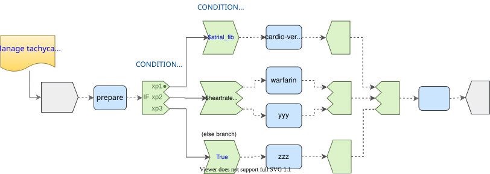
Decision Group (case)
The second pattern corresponds to a decision point in a workflow at which some expression is evaluated, and each outgoing branch corresponds to a sub-set of the expression’s value range (value_constraint attribute). The classes DECISION_GROUP and DECISION_BRANCH provide this structure, which is equivalent to a switch statement in a programming language. The branch sub-ranges should ideally be individually mutually exclusive, and collectively they should cover the entire value range of the expression. As with the Condition Group, the branches are processed in the order stated in the definition, which allows overlapping value constraints on successive branches. A catch-all 'else' branch may be represented as a DECISION_BRANCH with an open value_constraint (i.e. matching all values).
The following diagram shows a typical decision structure.
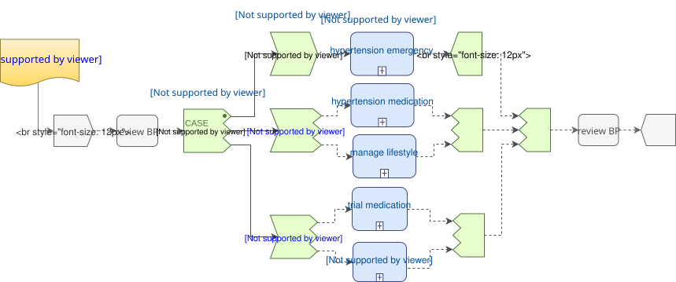
Event Group
The final structure is a wait state at which multiple branches correspond to the receipt of different events. Taken together, the events constitute a set of logical alternatives at the relevant point in the Plan. This structure is modelled using the classes EVENT_GROUP and EVENT_BRANCH, and is equivalent to a when / then / else rules structure in a rule-based programming environment.
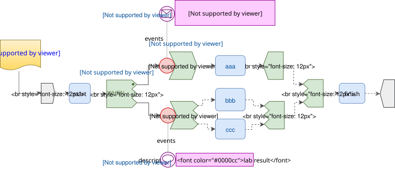
Class Definitions
Unresolved include directive in modules/task_planning/partials/7-definition_conditional.adoc - include::ROOT:partial$classes/choice_group.adoc[]
Unresolved include directive in modules/task_planning/partials/7-definition_conditional.adoc - include::ROOT:partial$classes/override_type.adoc[]
Unresolved include directive in modules/task_planning/partials/7-definition_conditional.adoc - include::ROOT:partial$classes/choice_branch.adoc[]
Unresolved include directive in modules/task_planning/partials/7-definition_conditional.adoc - include::ROOT:partial$classes/condition_group.adoc[]
Unresolved include directive in modules/task_planning/partials/7-definition_conditional.adoc - include::ROOT:partial$classes/condition_branch.adoc[]
Unresolved include directive in modules/task_planning/partials/7-definition_conditional.adoc - include::ROOT:partial$classes/decision_group.adoc[]
Unresolved include directive in modules/task_planning/partials/7-definition_conditional.adoc - include::ROOT:partial$classes/decision_branch.adoc[]
Unresolved include directive in modules/task_planning/partials/7-definition_conditional.adoc - include::ROOT:partial$classes/adhoc_group.adoc[]
Unresolved include directive in modules/task_planning/partials/7-definition_conditional.adoc - include::ROOT:partial$classes/adhoc_branch.adoc[]
Unresolved include directive in modules/task_planning/partials/7-definition_conditional.adoc - include::ROOT:partial$classes/event_group.adoc[]
Unresolved include directive in modules/task_planning/partials/7-definition_conditional.adoc - include::ROOT:partial$classes/event_branch.adoc[]
Order Tracking
A small number of features in the model are designed to support the tracking of orders from a Work Plan. The following UML view shows the relevant classes and properties.
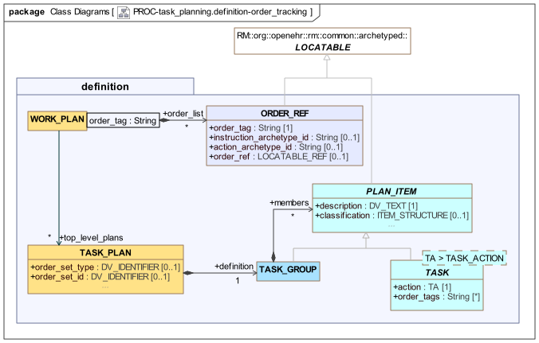
The facilities consist of the following:
-
the
ORDER_REFclass, representing an 'order reference'; -
WORK_PLAN.order_listis a table of Order Refs being tracked by the current Plan; -
TASK.order_tagsallows any Task to reference one or moreORDER_REFinstances in the Work Planorder_list.
These features enable the creation and/or tracking of orders in an EHR system, according to various scenarios described below. Orders as described here are usually represented as openEHR Instructions and Actions committed to an openEHR EHR (within Compositions), but may in fact be any object(s) that can be referred to by a LOCATABLE_REF(which contains a URI). The following sub-sections assume openEHR Instructions and Actions for simplicity of explanation.
Two key attributes are used to connect Tasks in a Work Plan to Instructions in the EHR. The first is the ORDER_REF.order_ref attribute, which represents a reference to the Instruction in the EHR. Subsequent Actions that are committed for a given Instruction contain references to the Instruction, which can be matched to the order_ref value.
The second attribute is ORDER_REF.order_tag, used to logically identify an order tracking reference (i.e. an ORDER_REF) within a Work Plan. Any TASK that wants to refer to one or more orders records these same references in its TASK.order_tags attribute. An order tag may take any String value not containing white space characters. The recommended approach is to use strings meaningful and unique within the Plan context, such that every order is distinguished, including distinct instances. For example, the value "hypertension_medication" may be sufficient within one Plan to identify and track an order for such medication, but if the Plan potentially may track two or more such medications, more unique values will be required, e.g. "beta_blocker_medication", "ACE_inhibitor_medication" etc. Similarly, orders for different types of insulin (typical for diabetics) would need to be distinguished.
Multiple order tags may be used in a TASK for the case where a single Task causes creation of multiple orders, or a single Task waits on events (Action commits) from multiple orders.
For Plans in which repetition occurs (PLAN_ITEM.repeat_spec), order tags may be constructed using the format "xxxx@n", e.g. "doxorubicin@1", "doxorubicin_admin@2" to refer to the orders for Doxorubicin in two distinct cycles of chemtherapy mentioned in the same Work Plan.
Tracking an Existing Order
In this scenario, at Work Plan design time, an order already exists in the form of an Instruction committed to a patient EHR. This might be a standing order, e.g. for insulin. The Plan might be used to track patient or healthcare professional administrations of such a medication.
Since it is possible to construct a LOCATABLE_REF to the INSTRUCTION (and indeed, to a contained ACTIVITY), it may be referenced from a Work Plan using an ORDER_REF instance, via the order_ref property. The corresponding Instruction archetype identifier may also be recorded, enabling direct lookup by the TP engine, for use within the Plan modelling environment. The order_tag field will be set to a value that refers to the order in a sufficiently precise way as to be unique within the Work Plan.
This scheme allows Tasks to be defined within the Plan that have a Task Wait (PLAN_ITEM.wait_spec) that wait on an event (e.g. SYSTEM_NOTIFICATION or MANUAL_NOTIFICATION) that is generated due to a subsequent commit to the EHR of ACTIONs for the original order (e.g. drug administration events, cancellation or suspension of medication by the doctor etc).
TBD: could also use Dispatchable Task approach as per below, to wait on an existing order.
Creating and Tracking an Order
In this scenario, the Work Plan is the creator of the order(s) of interest. At Work Plan design time, there is no order (i.e. INSTRUCTION) in the EHR (this will only occur at Plan execution time), so ORDER_REF.order_ref cannot initially be populated. An ORDER_REF can nevertheless be created for the order at Plan design time, with the order_tag being used to refer to the order from within the Work Plan. A typical Plan structure in this case might contain the following, for each order:
-
a
PERFORMABLE_TASK<DEFINED_ACTION>with associatedcapture_dataset, representing the entry of routine data and creation of the order, resulting in a commit to the EHR system of a Composition containing an Instruction for the order; -
a subsequent
DISPATCHABLE_TASK<SYSTEM_REQUEST>(orDISPATCHABLE_TASK<EXTERNAL_REQUEST>) that causes the appropriate API call or message to be generated and sent to the filler of the order (e.g. pharmacy, laboratory etc); this Task may include a callback wait state (DISPATCHABLE_TASK.callback) so that it blocks and waits for a result within a certain time-frame.
Both the Performable and Dispatchable Tasks use TASK.order_tags to logically refer to the same order. Any number of pairs of Performable and Dispatchable Tasks may be defined to create and react to different orders being processed within the same Work Plan.
A concrete callback event can be arranged to occur when an ACTION for the order of interest is committed to the EHR. This relies on the population of the relevant Work Plan CONTEXT_REF.order_ref attribute within the TP engine execution environment, at the moment the order is created in the EHR system. This then allows commits of ACTIONs for that order (among others, generally) to be matched with the Dispatchable Task(s) waiting on them. The callback processing for the Dispatchable Task follows the order tracking callback model described in Callback Processing for Blocking Tasks below.
The Dispatchable Task might be located in a repeating section of the Plan, if the intention is to await multiple Actions for the same Instruction.
An example of a Work Plan representing this scenario is available in the Task Planning Examples document.
Class Definitions
Unresolved include directive in modules/task_planning/partials/8-definition_order_tracking.adoc - include::ROOT:partial$classes/order_ref.adoc[]
Events
Overview
Work plans interact with events in the external world, as well being driven by time. In this model, moments in time are modelled in terms of Events that represent the reaching of certain points in time or an entry in a calendar, as time passes. Consequently, specifying a time for a Task to be performed and waiting for certain Events before it can be performed are both specified in terms of 'events'. The relevant part of the model, shown below, consists of various types of Events, and additionally, various types of wait states that may be used to intercept them.
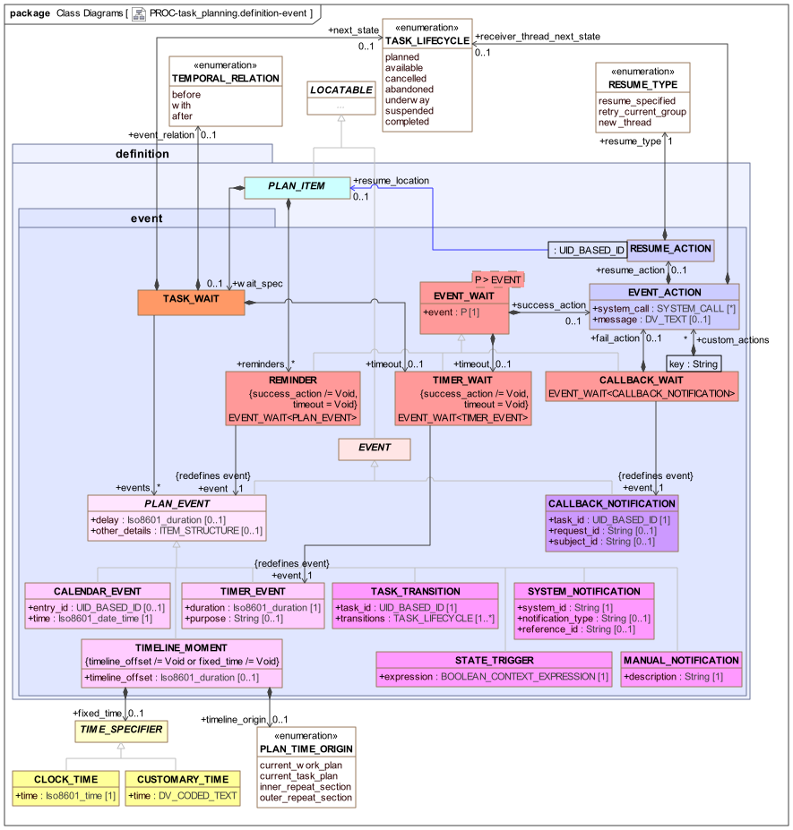
Two general classes of Events are distinguished:
-
deterministic: Events guaranteed to occur at a knowable point in time (shown on the lower left in light pink);
-
non-deterministic: Events that might never occur (shown on the lower right in magenta).
For non-deterministic events, a timeout handler is generally needed.
Event Types
The various Event types are described below, with their TP-VML representations.
| Type | TP-VML | Description |
|---|---|---|
Deterministic Events |
||
|
Event generated by the expiry of a Timer that was launched at some earlier time; if attached to a Task wait state, the timer is launched at the moment execution reaches the Task. |
|
|
Event generated by system clock reaching a fixed time-point on the Work Plan timeline, specified by an offset from the Work Plan origin (overridable) plus an optional fixed time in the day. The latter enables fixed points in time such as a particular hour of day or customary time such as 'afternoon' to be specified. A combination of the two such as |
|
|
Event generated by system clock reaching an event in the global Plan calendar, which is specified in absolute time, independent of the Work Plan timeline. The value of the |
|
Non-deterministic Events |
||
|
Event generated by the lifecycle transition of another Task, such as transition to |
|
|
An event generated by a change in a tracked variable, or a Boolean expression based on tracked variables, e.g. a value reaching a threshold. |
|
|
An event that is manually notified to the Plan execution engine by a user. |
|
|
An event that is notified to the Plan execution engine by a system. |
|
Non-deterministic Events (system) |
||
|
A callback notification connected to a dispatch for a Dispatchable Task (Hand-off, External Request, System Request). |
|
Instances of all of these types on their own only identify the type and source of an event - a wait state is required to catch an event. There are three types of wait state used in a TP definition: Task Wait, Timer Wait and Callback Wait. These are described below.
The following Event types require further explanation.
TIMELINE_MOMENT
The TIMELINE_MOMENT event type represents an event generated by the system when a point in time on the execution clock is reached. The time point is specified by two attributes, timeline_offset and fixed_time, with the time origin (default: Work Plan activation) being optionally specified by timeline_origin. At least one of the first two attributes must be set.
If fixed_time is set using an instance of CLOCK_TIME, it refers to the first moment at which the time occurs during the day, after any offset has elapsed. The following diagram shows how this works for two instances of TIMELINE_MOMENT, both having a fixed_time of 07:30 and a timeline_offset of P1d (one day), when the timeline origin is different (i.e. the Work Plan was started at different times).
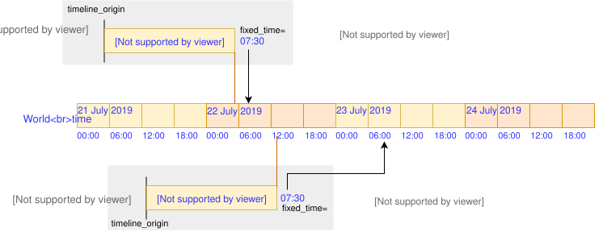
TIMELINE_MOMENT semanticsThe fixed_time attribute may also be set using an instance of CUSTOMARY_TIME, to allow the time to be specified using coded terms like morning, afternoon, evening and so on. Such terms are assumed to define time ranges such as 07:00:00 - 11:30:00 etc, which are typically culturally specific, and/or specific to hospital or other institutional norms. Consequently, such terms have to be resolved to computable intervals by some means (e.g. a locale service API call), left up to the TP execution system. Where such an interval is used to define a time, the event is generated at the earliest time of the interval (e.g. 07:00:00 for 'morning')
If fixed_time is not set, it refers to the first moment in time directly after the offset, if any, has elapsed (i.e. a Void fixed_time is intepreted as "don’t care"). If timeline_offset is not set, fixed_time is resolved to the first occurrence of the specified time directly from the time origin.
A TIMELINE_MOMENT with neithre of timeline_offset or fixed_time set is not considered meaningful, since it is equivalent to no TIMELINE_MOMENT event at all.
The timeline origin defaults to the moment of Work Plan activiation, but may be overridden via the timeline_origin attribute to be the moment of activation of the current Task Plan, or the entry into a repeating section (a Task Group or Task with repeat_spec set).
General Facilities
Event Wait State
The class EVENT_WAIT<T> defines a generic model of a general-purpose event wait state that may be specialised for particular purposes. Its attributes are as follows:
-
success_actionof typeEVENT_ACTION, which defines possible actions to occur on receipt of an event; -
timeoutof typeTIMER_WAIT, whosesuccess_actiondefines possible actions when no event is received.
The EVENT_ACTION type defines a number of things the system can do on a triggering event:
-
make a system call, if the
system_callattribute is set, e.g. to cause a notification to be sent or write to a system logger; -
displaying a message to the user, specified in the
messageattribute; -
optionally indicate a specific lifecycle state for the Plan Item (a Task or Task Group) receiving the event, specified by
receiver_thread_next_state; -
optionally indicate where execution should resume in the plan, for example at an earlier Task, via the
resume_actionattribute, whose value is an instance ofRESUME_ACTION, defining theresume_typeandresume_locationattributes.
Timers
A generic timer can be specified using TIMER_WAIT, a specialisation of EVENT_WAIT<TIMER_EVENT> based on the Event type TIMER_EVENT. This provides a way to specify a Timer (the TIMER_EVENT) and listen for it (the TIMER_WAIT). A TIMER_WAIT creates a separate Event wait state that listens for a Timer event launched some duration after Task activation, and may result in specific actions, specified via the inherited EVENT_WAIT.success_action attribute.
The timer represented by a TIMER_EVENT is started when the wait state to which it is attached is reached in the execution.
Reminder
A reminder can be specified using REMINDER, a specialisation of EVENT_WAIT<PLAN_EVENT>. Conceptually, a reminder is a wait state that is activated if a secondary event (represented by the event attribute inherited from EVENT_WAIT<T>) occurs in the absence of waited-on primary event(s), i.e. expected lifecycle transitions of the owning Task. Usually the secondary event is a TIMER_EVENT, but it could be anything else. If any of the primary events occurs, the reminder is cancelled.
Task Wait State
The principal way to wait for events is via the TASK_WAIT attachable to any PLAN_ITEM via the wait_spec attribute. The TASK_WAIT class represents a wait state that defines when a Task should enter the available state from the planned state in terms of descendant types of PLAN_EVENT (i.e. all Events described above other than CALLBACK_NOTIFICATION). Its events attribute enables multiple Events to be used as triggers, with an assumed logical OR relation among them. This enables the specification of triggers such as 'at 8pm on day 1, OR when oxygen saturation drops below 90% (whichever comes first)'. The optional event_relation attribute allows the Task to be specified as commencing before, with or after the trigger event (such as a meal).
The following figure illustrates typical uses of TASK_WAIT.
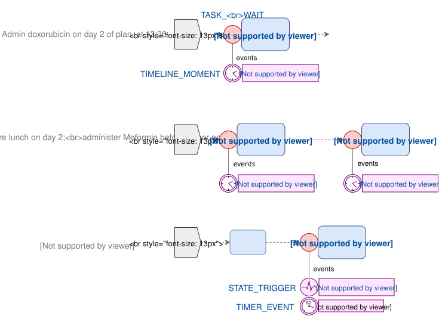
Time-outs
A timeout can be set on a Task Wait state by setting TASK_WAIT.timeout with a TIMER_WAIT instance, which is activated when the Task Wait state is reached in the execution. This is useful in cases where Event receipt is not certain. The TIMER_WAIT generates a timer event if no other event is received; conversely, receipt of any other event cancels the timeout timer. The TIMER_EVENT attached to TIMER_WAIT.event indicates the duration of the timer. The success_action of the TIMER_WAIT indicates actions to execute if the timer fires. The following Plan fragment illustrates.
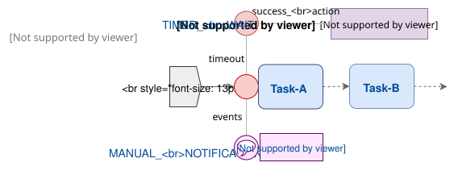
Reminder
When an event specified in TASK_WAIT.events fires, it puts the Task into the available lifecycle state. In typical real world situations, the performer may not realise, or may be busy on something else. To enable the performer to be reminded, the PLAN_ITEM.reminders attribute may be used to specify one or more REMINDER wait states. Each of these will have a TIMER_EVENT (or other event) as its firing event.
TBD: what about transition to underway?
If a Reminder is activated, it will generate a notification, specified via the inherited success_action attribute. If still no activity occurs for some time, additional reminders may fire (due to Timer events with longer times), and generate new notifications. As soon as the performer progresses the Task to a new state, any reminder for which such a transition is cancelling, will be cancelled. An example is illustrated below.
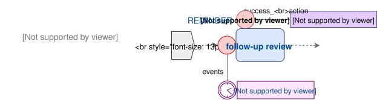
Lifecycle Transition Override
In some cases, it may be necessary to progress a Task to a state other than available. This may be achieved by specifying TASK_WAIT.next_state.
Callbacks
A callback is the mechanism to state what happens when control returns to a Dispatchable Task (such as a Hand-off or External Request) from its target. It is defined in the model by CALLBACK_WAIT, a specialisation of EVENT_WAIT<CALLBACK_NOTIFICATION>, which represents a wait state to receive notifications of Dispatch completion, as well as timeout if no response is received. The callback event is formally represented by the CALLBACK_NOTIFICATION class. These classes are shown in the following view of the UML model.
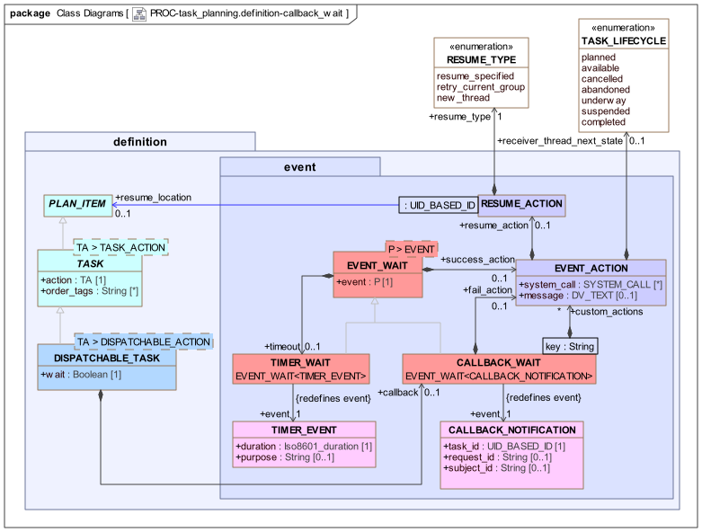
In order to define the processing on receipt of a callback event, CALLBACK_WAIT adds two attributes to EVENT_WAIT<T>:
-
fail_action: enables a differentEVENT_ACTIONto be specified on receipt of a callback with a 'fail' status; -
custom_actions: enables a custom set ofEVENT_ACTIONsto be specified, in the form of a Hash table, with a specific Event Action for each key; the keys are assumed to represent specific return statuses of the remote Task.
A Callback Wait thus has three standard Event responders: success_action, fail_action and timeout, and additionally any number of custom responders definable via custom_actions, described below.
Task lifecycle state processing for a Dispatchable Task occurs both at the point of dispatch and return and/or timeout. The general model is as follows:
-
the Task starts in the
plannedstate, as for any Task in a Plan; -
when the execution point reaches the Task, and any Task Wait state has been exited, the Task becomes
available(refer above to Task Availability); -
the Task dispatch operation is performed either automatically, or in the case of an External Request, manually;
-
if
DISPATCHABLE_TASK.waitisFalse:-
the Task transitions to the
completedstate.
-
-
if
DISPATCHABLE_TASK.waitisTrue:-
the Task enters the
underwaystate until a callback (or timeout) occurs, at which point the next state will depend on the details of the callback (see below);
-
Callback Processing for Blocking Tasks
For a DISPATCHABLE_TASK that blocks and waits in the underway state, there are three callback processing models:
-
standard: genericsuccess | fail | timeoutmodel; -
order tracking: used ifDISPATCHABLE_TASK.order_tagsis set; -
custom: used ifDISPATCHABLE_TASK.callback.custom_actionsis set.
Each model corresponds to a different set of possible callback statuses returned by the TP engine with the callback notification to represent the state of the remote Task execution. In the standard model it is a generic success | fail | timeout approach. Under the order tracking model (Order Tracking, above), the return statuses are states from the openEHR Instruction State Machine. Under the custom model, they are specific to the context.
Under each model, the next lifecycle state of the Dispatchable Task is determined by the callback status in a specific way. For each possible status under each model, a specific callback handler may be set, defined in terms of the CALLBACK properties success_action, fail_action, timeout.success_action. Any of these (see class EVENT_ACTION) if set may override the default next state, and also may generate a system call and/or a message for the performer.
TBD: It would be reasonable to design an implementation with a default message of the form "Task $task_name[id=$task_id] completed with $state", and a global flag default_messages_on to obviate the need to always set basic messages in EVENT_ACTION.
In special cases, it may also cause execution to resume in another place (see [_resume_semantics]).
A common approach to timeout processing applies to all models. If no callback occurs, and CALLBACK.timeout.success_action is set, its timer will be used to generate the timeout, and also to determine the next state, message etc. If it is not set, the Work Plan global timeout will be triggered to unblock the Task and transition it to the abandoned state.
TBD: need to define Plan level timeout.
The following table describes the details of callback processing under the various models.
| Callback model |
Callback statuses |
Dispatchable Task settings |
Response processing | Notes |
|---|---|---|---|---|
Standard |
success |
no callback handlers |
|
|
callback handlers ( |
As specified in |
Use to e.g. convert fail to |
||
Order |
Action ISM state |
no callback handlers |
|
May catch multiple callbacks via use of |
callback handlers ( |
As specified in |
|||
Custom |
Custom statuses |
callback handlers ( |
|
May catch multiple callbacks via use of |
The following diagram shows the TP-VML definition for a dispatchable Task with a standard callback.
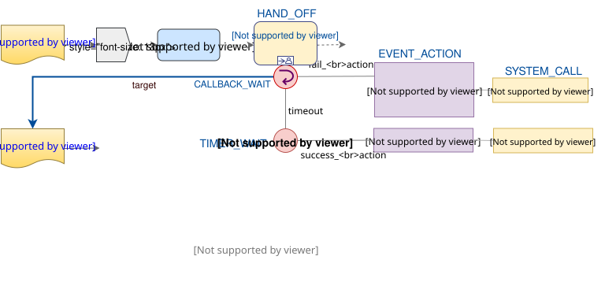
The following TP-VML definition illustrates a custom callback.
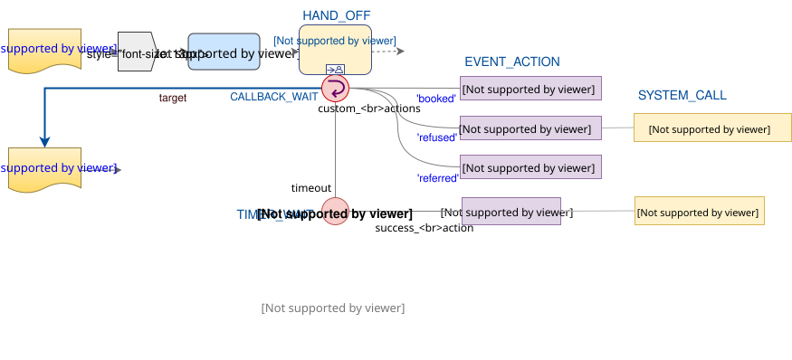
Callback Processing for Non-blocking Tasks
In the case of a context fork, the source Task has performed its work as soon as the dispatch has occurred, and its state is set to completed. The next Task(s) become available in the normal way, and processing continues. At some later point in time, a callback notification may be received from the remote Task, or else a timeout. These will be processed similarly to the above, with the exception that the next state processing, if explicit next states are set, is with respect to the Task Group enclosing the current point of execution, which may be the top-level Group of the Task Plan. This allows the possibility of the callback processing to cause the local execution pathway to stop with abandonment or cancellation. The default next-state processing is 'no change', i.e. the current execution path doesn’t care what happens to the remote thread. However, if EVENT_ACTION.receiver_thread_next_state is set from the return status of the remote Task, the execution of the Task Group containing the source Task may be ended (cancel) or the whole Plan abandoned (abandon). Such a transition might even be set on success, which provides a way to model 'first one wins' logic.
The following illustrates a non-blocking callback in TP-VML.
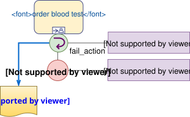
Callback with Custom Resume Behaviour
The attribute EVENT_ACTION.resume_action of type RESUME_ACTION, and its attribute resume_location enable custom post-callback behaviour to be stated. The default is to process the EVENT_ACTION (e.g. post a message, make a system call etc), and then to complete the current Task and progress to the next in the normal way. A custom resume action alows a different resumption location to be specified, as defined by the enumeration RESUME_TYPE. This kind of resumption is described below in the section on [_resume_semantics].
Manually-notified Pseudo-callback
A callback at execution time is achieved via notification within the TP system. However, in some cases, the effect of a callback is required where the means of notification is the subject (i.e. the patient, in a clinical system) being sent to another department or room, and the current performer’s execution blocking for that subject until he/she returns. This effect can be achieved by the task pattern shown below, consisting of a Hand-off followed by a normal Task that waits on a Manual notification event. This pattern is not a true callback.
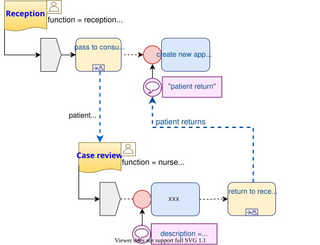
Class Definitions
Unresolved include directive in modules/task_planning/partials/9-definition_events.adoc - include::ROOT:partial$classes/task_wait.adoc[]
Unresolved include directive in modules/task_planning/partials/9-definition_events.adoc - include::ROOT:partial$classes/event_wait.adoc[] Unresolved include directive in modules/task_planning/partials/9-definition_events.adoc - include::ROOT:partial$classes/timer_wait.adoc[] Unresolved include directive in modules/task_planning/partials/9-definition_events.adoc - include::ROOT:partial$classes/reminder.adoc[] Unresolved include directive in modules/task_planning/partials/9-definition_events.adoc - include::ROOT:partial$classes/callback_wait.adoc[] Unresolved include directive in modules/task_planning/partials/9-definition_events.adoc - include::ROOT:partial$classes/event_action.adoc[] Unresolved include directive in modules/task_planning/partials/9-definition_events.adoc - include::ROOT:partial$classes/resume_action.adoc[]
Unresolved include directive in modules/task_planning/partials/9-definition_events.adoc - include::ROOT:partial$classes/event.adoc[] Unresolved include directive in modules/task_planning/partials/9-definition_events.adoc - include::ROOT:partial$classes/plan_event.adoc[]
Unresolved include directive in modules/task_planning/partials/9-definition_events.adoc - include::ROOT:partial$classes/timer_event.adoc[] Unresolved include directive in modules/task_planning/partials/9-definition_events.adoc - include::ROOT:partial$classes/calendar_event.adoc[] Unresolved include directive in modules/task_planning/partials/9-definition_events.adoc - include::ROOT:partial$classes/timeline_moment.adoc[]
Unresolved include directive in modules/task_planning/partials/9-definition_events.adoc - include::ROOT:partial$classes/task_transition.adoc[] Unresolved include directive in modules/task_planning/partials/9-definition_events.adoc - include::ROOT:partial$classes/manual_notification.adoc[] Unresolved include directive in modules/task_planning/partials/9-definition_events.adoc - include::ROOT:partial$classes/system_notification.adoc[] Unresolved include directive in modules/task_planning/partials/9-definition_events.adoc - include::ROOT:partial$classes/state_trigger.adoc[]
Unresolved include directive in modules/task_planning/partials/9-definition_events.adoc - include::ROOT:partial$classes/callback_notification.adoc[]
Cost Tracking
TBD: describe cost tracking.
Class Definitions
Unresolved include directive in modules/task_planning/partials/10-definition_cost.adoc - include::ROOT:partial$classes/task_costing.adoc[]